La idea
Ver más fino sin construir una antena gigante
Un radiotelescopio distingue detalles en el cielo según el cociente entre la longitud de onda que observa y su propio tamaño. Para la línea de 21 cm del hidrógeno neutro, una antena de 5 m ve el cielo con un «píxel» de más de dos grados, cuatro veces el diámetro de la Luna llena.
La interferometría combina las señales de varias antenas separadas entre sí. El conjunto resuelve detalles como lo haría una sola antena del tamaño de esa separación, llamada línea de base.
θ ≈ λ / D → θ ≈ λ / B
θ es la resolución angular, λ la longitud de onda, D el diámetro de una antena y B la línea de base entre dos antenas.
Resolución a 1420 MHz
Escala logarítmica, estimación λ/B. Cada división es un factor 10.
Barras más cortas significan detalles más finos. Las antenas del IAR de 30 m resuelven unos 30′ con iluminación real; el haz simulado de MIA es de 2,6°.
Cómo funciona
Tres antenas, demoras y unas franjas
Una fuente de radio lejana envía frentes de onda planos. Si la fuente no está justo arriba, el frente llega a cada antena en un momento distinto. Entre dos antenas separadas una distancia B, el camino extra es B·sen θ y produce una demora geométrica τ = B·sen θ / c.
Con tres antenas hay tres pares, MIA I–MIA II, MIA II–MIA III y MIA I–MIA III, y por lo tanto tres demoras. El correlador multiplica las señales de cada par y promedia el resultado. Como las demoras cambian a medida que la Tierra rota y la fuente se desplaza por el cielo, la salida de cada par oscila: son las franjas de interferencia.
La separación entre franjas, λ/B, es la resolución de cada par: el par más separado da las franjas más finas. Cada par mide una componente de Fourier del brillo del cielo, llamada visibilidad; tres antenas miden tres visibilidades a la vez.
Cada una de las tres primeras trazas es la salida del correlador de un par para una fuente puntual en cada ángulo; la línea punteada es el haz de una antena (2,6° a −3 dB, según la simulación). El par más separado, I–III, da las franjas más finas. La cuarta traza no es otra salida del correlador, que multiplica las señales de a pares: es el promedio de las tres, el haz sintetizado del arreglo en ese instante. Donde las tres franjas coinciden se forma un pico más angosto que el haz de una antena, pero con solo tres pares aparecen al costado otros picos casi tan altos (con 60 y 40 m, a 1420 MHz, el dibujo se repite cada 0,6°); más pares y la rotación terrestre los reducen (ver «Síntesis de apertura»). La línea vertical marca una fuente que cruza el cenit del IAR (latitud −34,9°), arrastrada por la rotación terrestre a 12,3° por hora: tarda unos 13 minutos en atravesar el haz.
Del cielo al dato · fase 1
Seis pasos para cada antena
Este es el recorrido de la señal en la configuración actual del Pathfinder. Cada antena recibe dos polarizaciones lineales y las lleva por fibra óptica hasta la sala de control.
-
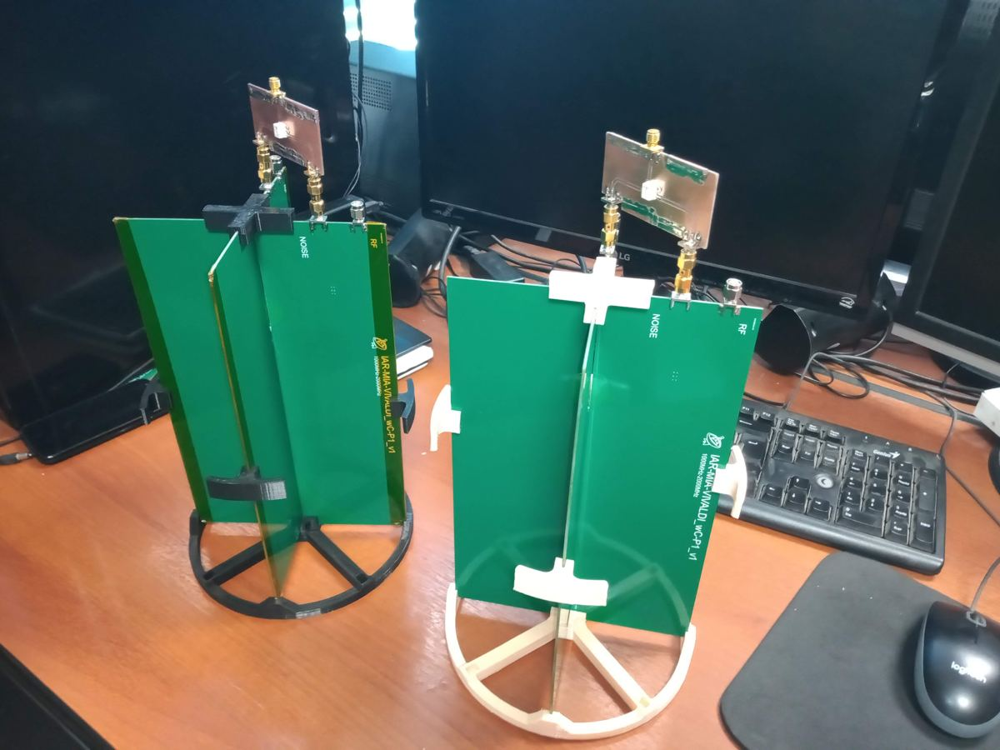
01 · CAPTAR
Reflector e iluminador
El reflector concentra la radiación en su foco, donde dos antenas Vivaldi cruzadas reciben las polarizaciones horizontal y vertical.
Reflector de 5 m · f/D 0,433 · Vivaldi doble en FR4
-
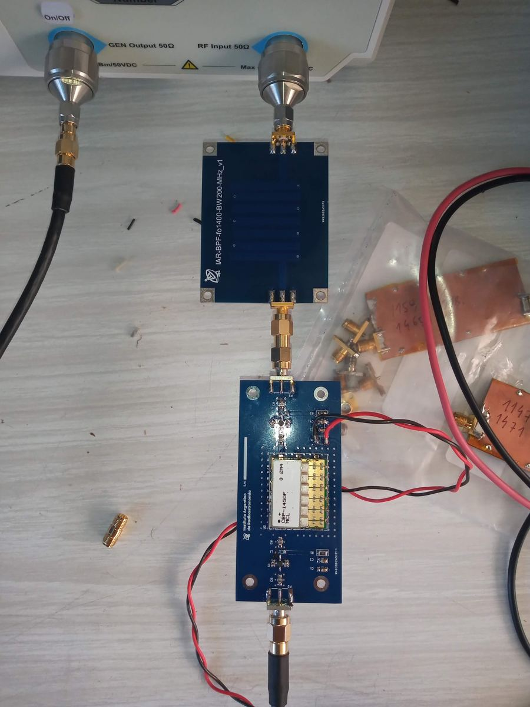
02 · AMPLIFICAR Y FILTRAR
Cadena de RF
La primera etapa fija el ruido del receptor. La segunda amplifica y deja pasar solo la banda de 1250 a 1500 MHz, que contiene la línea de 21 cm.
PGA-103+ (≈ 49–55 K) · ERA-3 · filtro CBP-1450F+
-
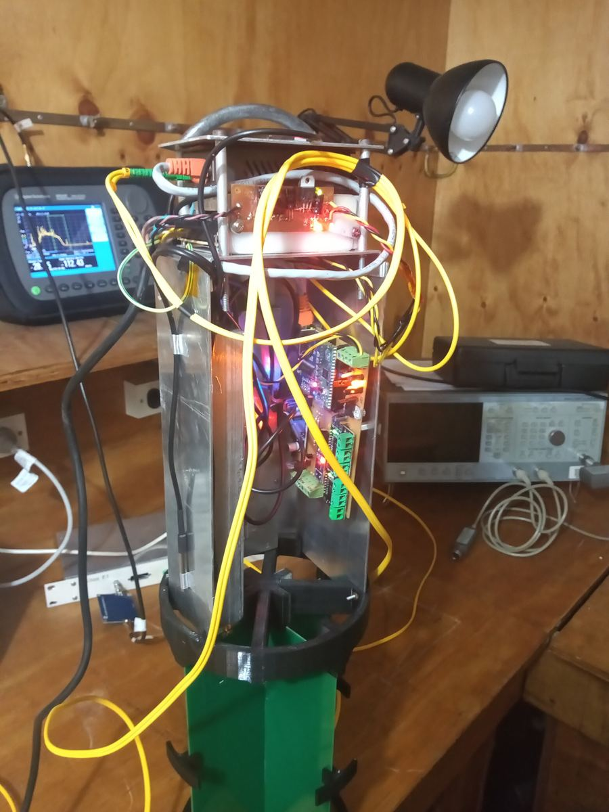
03 · TRANSPORTAR
RF sobre fibra
La señal de radio modula un láser y viaja por fibra óptica hasta la sala de control, sin las pérdidas de un cable coaxial largo.
RFoF · calibración con diodo de ruido NC3203-A
-
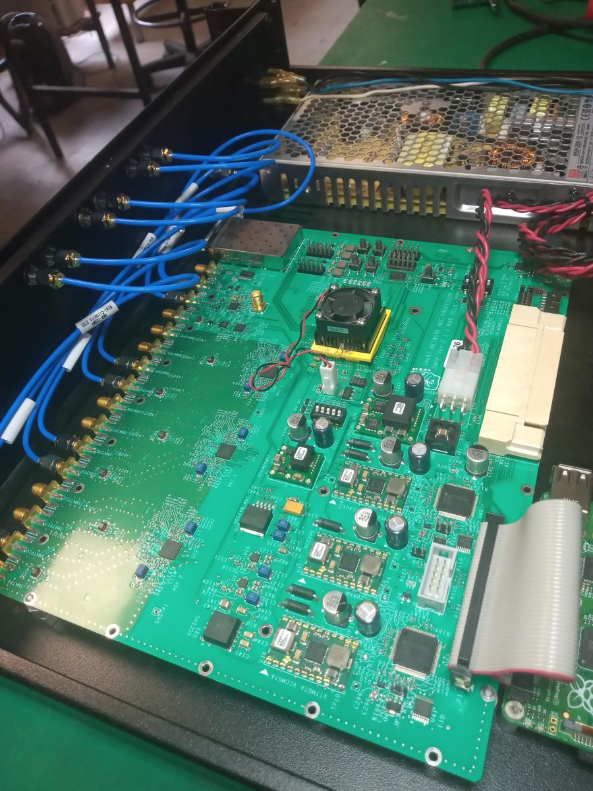
04 · DIGITALIZAR
Muestreo directo
La placa SNAP muestrea a 800 millones de muestras por segundo. La banda de 1250–1500 MHz cae en la cuarta zona de Nyquist (1200–1600 MHz), así que se digitaliza sin convertir la frecuencia.
SNAP (CASPER) · ADC HMCAD1511 · FPGA Kintex-7
-
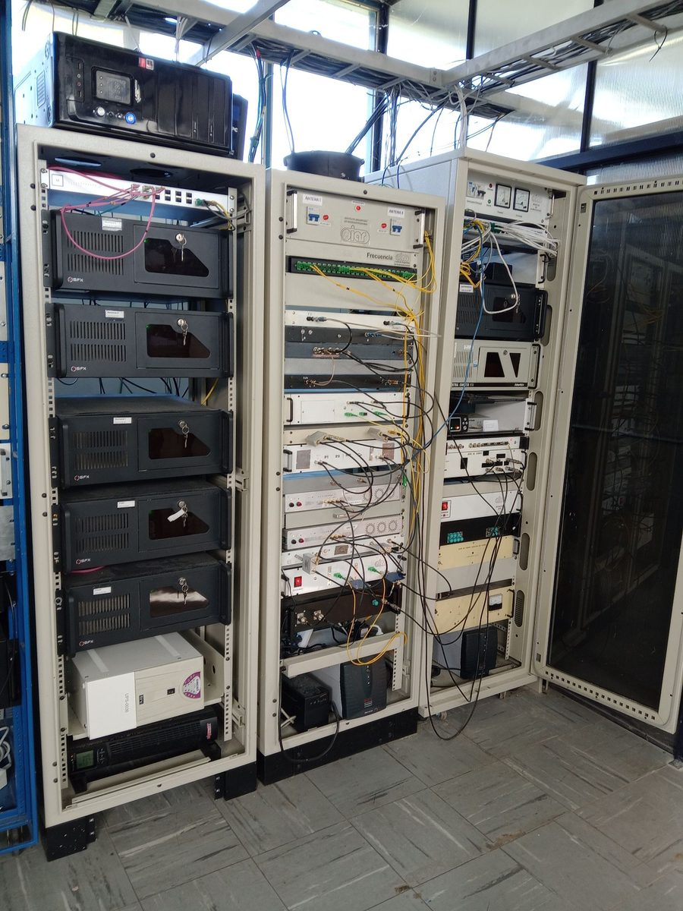
05 · CORRELACIONAR
Correlador FX
Un banco de filtros polifásico y una FFT separan la banda en canales. Después se multiplican y promedian las señales de cada par de antenas.
1024 canales de 0,39 MHz · salida por Ethernet 10 Gb/s
-
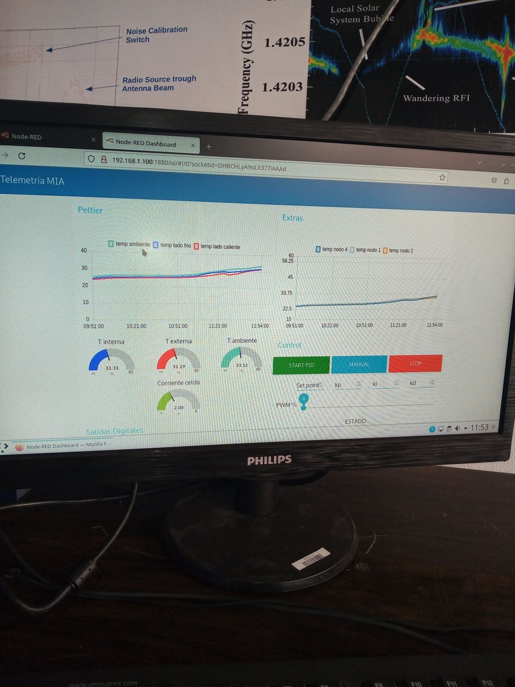
06 · APUNTAR Y CUIDAR
Control y telemetría
Cada antena sigue la fuente en azimut y elevación y reporta su estado. Si el viento supera 45 km/h, se detiene y se estaciona mirando al cenit.
Azimut 0–360° · elevación 0–90° · RP2040 + BeagleBone Black
En fase 1 no hay conversión de frecuencia ni control de temperatura en el Front-End. Cada antena tiene dos cadenas iguales, una por polarización.
Síntesis de apertura
Tres antenas, tres pares, y la Tierra que gira
Con N antenas hay N(N−1)/2 pares. Tres antenas forman tres líneas de base, y cada una mide una visibilidad en un punto del plano (u, v): la línea de base vista desde la fuente, medida en longitudes de onda.
Mientras la Tierra rota, cada línea de base cambia de orientación respecto de la fuente y recorre una elipse en ese plano. Cuanto más cubierto está el plano, mejor es la imagen. Esta técnica, la síntesis de apertura por rotación terrestre, es la que usan los grandes interferómetros.
Las posiciones de las antenas de este gráfico son ilustrativas, con separaciones entre 20 y 100 m. Las coordenadas de MIA I, MIA II y MIA III todavía se están definiendo.
Trazos mientras la fuente está a más de 15° de elevación. Unidades: longitudes de onda a 1420 MHz.
El programa MIA en tres fases
Probar con tres, crecer a dieciséis, salir del IAR
La fase 1 es el prototipo de tres antenas, ya en marcha en el predio del IAR. La fase 1-B amplía el arreglo a 16 antenas en el mismo predio. La fase 2 lleva las 16 antenas a nodos fuera del IAR, con la banda completa del iluminador y líneas de base de hasta 55 km. Cada fase tiene su Master Design Report.
| Sistema | Fase 1 · en curso | Fase 1-B | Fase 2 |
|---|---|---|---|
| Antenas | 3 reflectores de 5 m: MIA I, MIA II y MIA III | 16: las 3 de la fase 1 y 13 más | 16, en cinco nodos de tres antenas y uno de una |
| Lugar | Predio del IAR; separaciones de decenas de metros | Predio del IAR | Fuera del IAR, sitio a definir; líneas de base de hasta 55 km |
| Montura | Alt-azimutal: azimut 0–360°, elevación 0–90° | Igual | Igual |
| Banda de RF | 1250–1500 MHz, definida por el filtro | Configuración a definir en el Master Design Report de la fase 1-B | 1000–2300 MHz, la banda completa del iluminador |
| Primera etapa | PGA-103+, temperatura de ruido ≈ 49–55 K en la banda | uLNA SKY67151, ≈ 17–24 K; requisito del receptor: 45 K | |
| Control térmico | Sin control de temperatura | A evaluar a partir de los ensayos con celdas Peltier | |
| Digitalización | 3 entradas a 800 MS/s, muestreo directo en zona de Nyquist | 6 entradas por nodo (3 antenas × 2 polarizaciones) a 500 MS/s | |
| Canales | 1024 canales de 0,39 MHz | 256 canales para transitorios y 16 384 para líneas espectrales | |
| Viento | Estacionamiento al cenit con más de 45 km/h | Igual | Igual; supervivencia a 165 km/h |
| Documento | 000140-DS, borrador R00 | 000150-DS, en preparación | 000130-DS R02, en preparación |
Fases 1 y 2: decisiones de configuración del 06/11/2026. Los códigos son de la serie IAR-OBS-MIAPF; los requisitos de las tres fases se reúnen en la matriz 000160-RQ, en preparación.
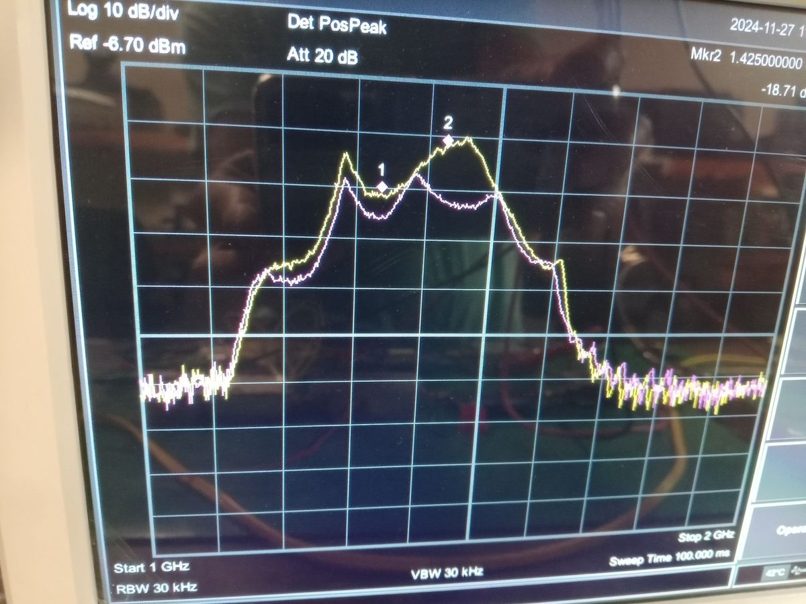
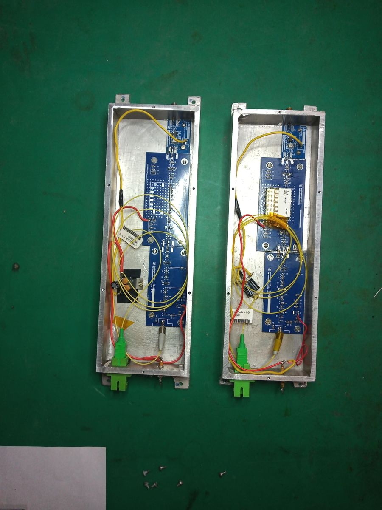
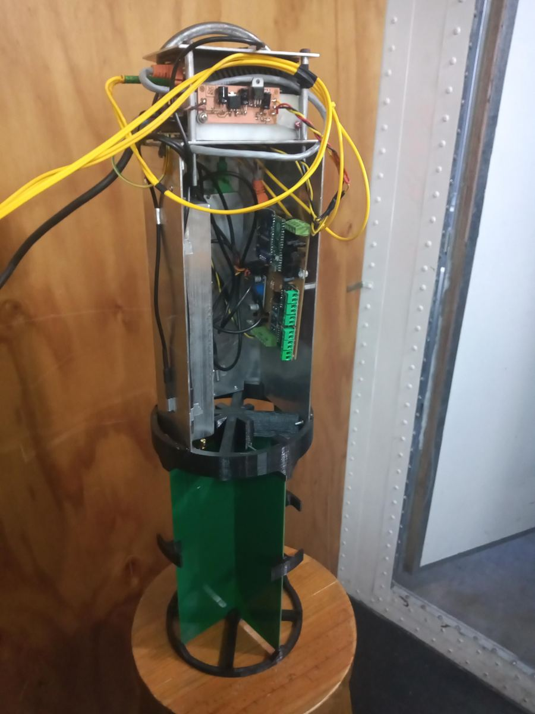
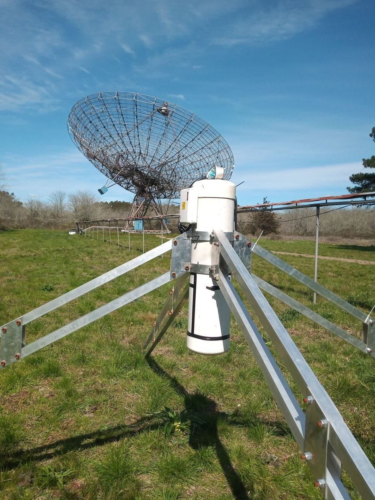
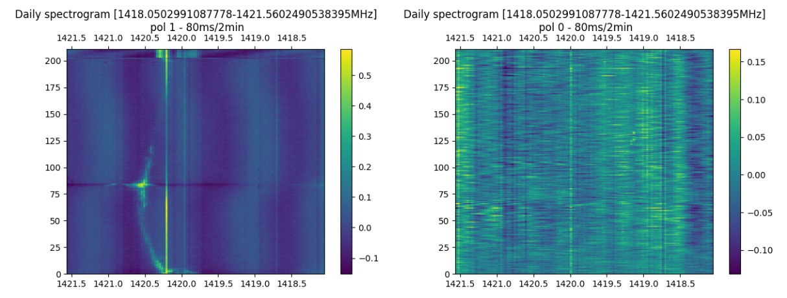
Lo que viene
De tres antenas a un instrumento de 55 km
Fase 1 · predio del IAR
3antenas
MIA Pathfinder: un nodo de tres antenas separadas por decenas de metros. Resolución del orden de 7′ con 100 m de línea de base. Valida receptores, control, digitalización y correlación.
Fase 1-B · predio del IAR
16antenas
Trece antenas más en el mismo predio. Dieciséis antenas forman 120 pares, los mismos que tendrá el arreglo de la fase 2.
Fase 2 · fuera del IAR
16antenas
Cinco nodos de tres antenas y uno de una, en un sitio con baja interferencia de radio todavía a definir. Líneas de base de hasta 55 km: ≈ 0,8″ a 1420 MHz, más de mil veces más fino que las antenas actuales del IAR.
Más adelante, el arreglo puede crecer: el correlador se diseña para operar hasta 64 antenas.
- Hidrógeno neutroLa línea de 21 cm para estudiar la distribución y el movimiento del gas en nuestra galaxia y en otras.
- Formación estelarJets, regiones de gas ionizado, líneas de recombinación y máseres de OH a 1665 MHz.
- Fuentes no térmicasNúcleos galácticos activos, blazares y mapas de índice espectral de radiofuentes extendidas.
- Púlsares y transitoriosTiming de púlsares, magnetares y ráfagas rápidas de radio (FRB), con alta resolución temporal.
El sitio
Tres bases en el predio del IAR
Las tres antenas, MIA I, MIA II y MIA III, se instalan en el predio del Instituto, en el Parque Pereyra Iraola. En noviembre de 2023 se hicieron las zanjas para los caños de energía y fibra óptica, los pozos de las fundaciones y las cámaras de inspección.
- CanalizaciónCaños de PVC enterrados para el tendido eléctrico y de red de cada antena.
- Puesta a tierraAnillo de cobre de 50 mm² a 0,5 m de profundidad con jabalinas, resistencia objetivo de 5 Ω o menos.
- SueloResistividad medida de 14,88 Ω·m.
- CargasDisco y contrapeso ≈ 490 kg; viento de operación de diseño 50 km/h, supervivencia 165 km/h.
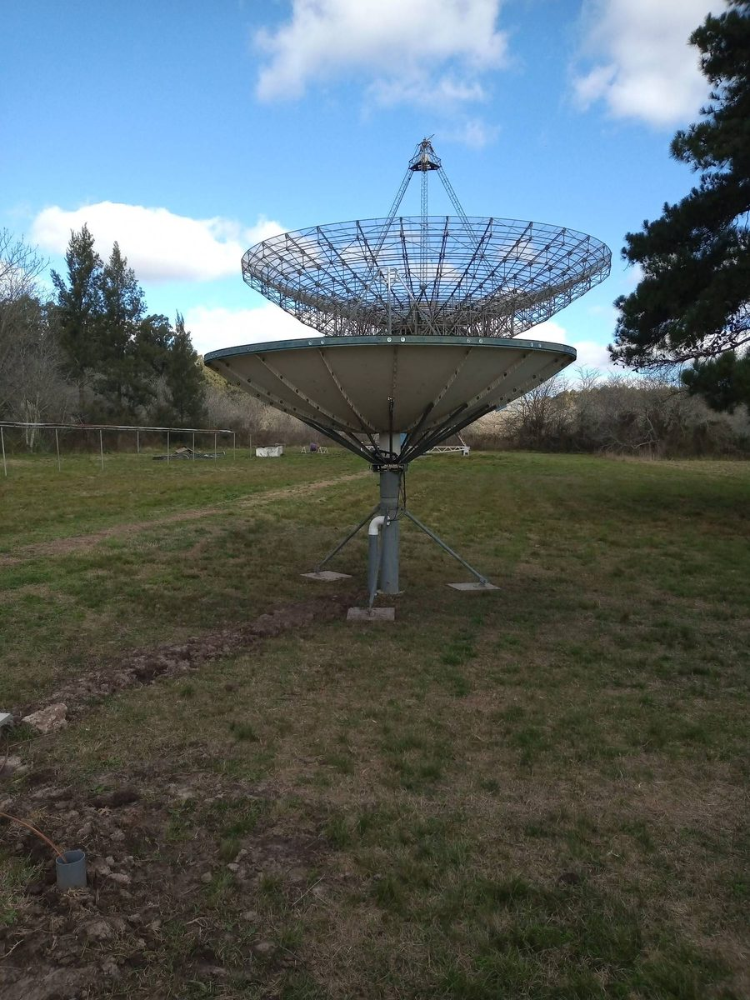
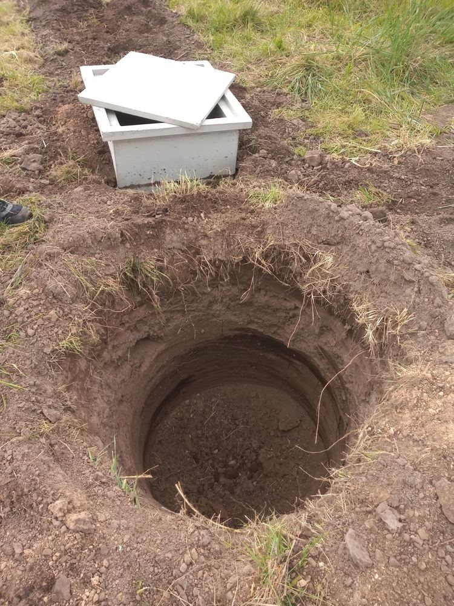
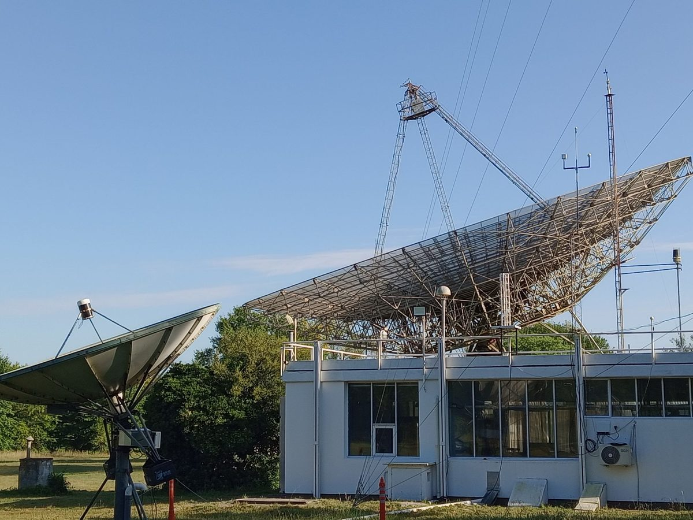
Publicaciones
Artículos sobre MIA
Trabajos sobre el proyecto, el Pathfinder, la ciencia que hará MIA y los métodos para ubicar sus antenas y calibrarlo. Todos tienen una versión que se puede leer en línea sin costo.
-
The Multipurpose Interferometric Array and the Development of its Technological Demonstrator
Propuesta del instrumento y estado de cada etapa del Pathfinder. Presentado en el workshop por los 60 años del IAR.
-
The multipurpose interferometric array [MIA] and the development of its technological demonstrator
Versión presentada en la LXV Reunión Anual de la Asociación Argentina de Astronomía (San Juan, 2022), con el estado del Pathfinder y el plan a corto plazo.
-
End to End Developments for the Multipurpose Interferometer Array Pathfinder from the IAR Electronics Laboratory
Diseño y avance de la electrónica del Pathfinder hecha en el Laboratorio de Electrónica del IAR: control de posición, radiofrecuencia, adquisición y procesamiento.
-
Development of an Antenna Array Simulator
Simulador de la respuesta de un interferómetro según la posición de las antenas, con simulaciones para MIA.
-
Python implementation and validation of an Optimization Method for Interferometric Antenna Arrays
Método para optimizar la posición de las antenas a partir de una distribución inicial al azar y de la densidad de muestras buscada en el plano (u, v), con las restricciones del terreno. Incluye un caso simplificado de MIA. XX Reunión de Trabajo en Procesamiento de la Información y Control (Oberá, 2023).
-
Staged Array Configuration Optimization for the Multipurpose Interferometer Array
Extiende un método de optimización por gradiente a observaciones largas y a arreglos que crecen por etapas, y lo aplica a la distribución de las antenas de MIA según la declinación y la duración de las observaciones, con el efecto del relieve del terreno. La versión preliminar, de libre acceso, está en TechRxiv (2024).
-
Radio Interferometric Calibration with the Exponential Map
Estimador rápido de máxima verosimilitud para calibrar un interferómetro, probado con una observación real del Submillimeter Array. Enviado a IEEE Transactions on Signal Processing.
-
An Approximation to the Detection of the 21cm Line of the Reionization Epoch with the MIA Interferometer
Posibilidades de observar con MIA la línea de 21 cm de la época de reionización.
-
Science Research from the Instituto Argentino de Radioastronomía
La producción científica del IAR y los objetivos científicos de MIA.
Workshop por los 60 años del IAR
Prospects for Low Frequency Radio Astronomy in South America. Allí se presentó MIA, y las actas forman el volumen 56 de la Revista Mexicana de Astronomía y Astrofísica, Serie de Conferencias (2024), donde están la mayoría de los artículos de esta lista.